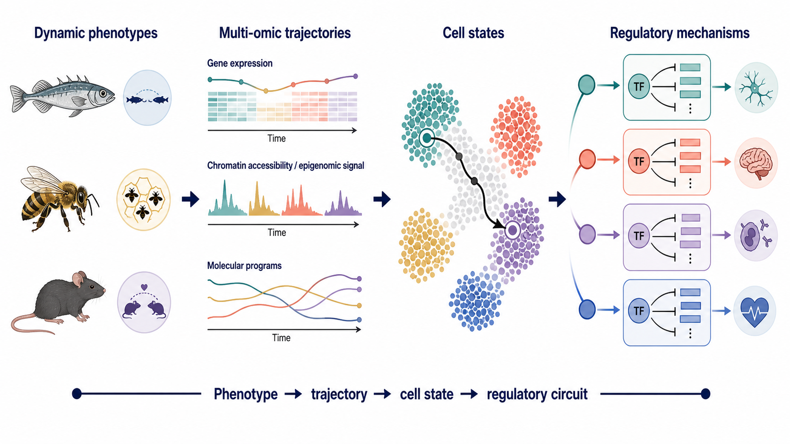

A research trajectory built around context and regulation
My research asks how biological context changes gene regulation, how those changes are distributed among cells, and how they relate to phenotype. In my earlier neurogenomics work, context meant social experience, parental behavior, species differences, and infection. In my current pediatric oncology work, it includes developmental programs, tumor genotype, and the immune and stromal environment. Together, these experiences provide a foundation for studying disease as a problem of cellular regulation within a tissue, rather than interpreting every molecular measurement in isolation.
My published neurogenomics portfolio spans temporal transcriptomics, chromatin-informed analysis, comparative systems biology, and contributions to single-cell regulatory-network studies. The sections below distinguish those contributions from a future application of this expertise to psychiatric and neurodegenerative genomic medicine. My animal behavioral studies did not establish mechanisms of human psychiatric illness or neurodegeneration; they developed approaches for asking how regulatory programs change with context.


Temporal transcription and chromatin regulation
In my first-author study of male threespined sticklebacks, we asked how a territorial interaction reorganizes molecular regulation over time. Combining brain RNA-seq, H3K27ac chromatin evidence, and inferred regulatory relationships revealed successive molecular responses rather than one static expression signature. Early and later responses involved different functional processes, with later immune and homeostatic components adding an important dimension to the behavioral response. My contributions included conceptualization, data curation, formal analysis, methodology, software, visualization, and manuscript drafting. Bukhari et al., PLOS Genetics, 2017.
The analytical lesson was that timing changes interpretation. An expression difference can reflect a transient response, a later adjustment, or a persistent state, and complementary chromatin evidence can help formulate regulatory hypotheses. Because these were bulk brain measurements, immune-related expression did not by itself identify the responsible cell population or establish causal microglial activation. This distinction informs how I now separate program activity, cell composition, and mechanism in heterogeneous tissues.
Competing models of parental and social behavior
My first-author paternal-care study examined whether entry into a parental state produces an enduring transcriptional change, distinct stage-specific responses, or a cumulative progression. We compared these alternatives across the paternal-care cycle, related the results to territorial aggression, and examined parallels with parental responses in other species. The study connected enduring transcriptional responses in stickleback fathers with responses reported in mammalian mothers, while identifying contrasting regulation associated with paternal care and aggression. I contributed to study design, performed data analysis, and wrote the first manuscript draft. Bukhari et al., Nature Communications, 2019.
The paper links my public paternal-care analysis code, providing an inspectable record of the computational work. This project strengthened my approach to explicit model comparison. In a future brain-disease analysis, the corresponding question would be whether an observed program reflects a stable susceptibility, a compensatory response, disease progression, or changing cellular composition. Those explanations require different designs and evidence. Similarity between a behavioral program and a disease-associated signature would generate a hypothesis, not establish that the animal behavior models the disorder.
Comparative regulation across species
I contributed data analysis to the 2014 cross-species PNAS study and was a coauthor on a subsequent systems analysis of social challenge. Together, these collaborations helped extend neurogenomic reasoning across mouse, stickleback, and honeybee systems. These studies examined common molecular responses and regulatory organization despite substantial differences in species, brain structure, and experimental context. They provided a way to ask whether evolution reuses aspects of a molecular response while allowing the genes and their deployment to vary. Rittschof et al., PNAS, 2014; Saul et al., Genes Brain and Behavior, 2019.
For genomic medicine, the transferable contribution is comparative discipline: define the biological comparison, map homologous genes carefully, assess conservation at the level of pathways or regulatory programs, and test what does not generalize. Conservation can prioritize a mechanism for follow-up, but human genetic and disease evidence must determine its relevance to patients. This same reasoning underlies my interest in recurrent versus tumor-specific programs across pediatric cancers.
Cellular networks and the social environment
In a collaborative single-cell study of honeybee aggression, the team connected colony phenotype with cell-type-resolved brain regulation. Regulatory differences between soldiers and foragers were more pronounced in aggressive colonies, and the analysis placed those differences in sensory and integrative brain contexts. I contributed methodology development and manuscript review and editing during my postdoctoral period at Illinois. Traniello et al., Nature Ecology and Evolution, 2023.
The contribution of a cellular view is not simply a finer map. It allows a network-level question: in which populations is a response organized, and how does its interpretation depend on the environment? This is relevant to disease-associated regulatory programs that may be concentrated in particular neuronal or glial populations. The analogy is methodological; the honeybee findings do not establish a human disease mechanism.
Infection and the neuroimmune context of behavior
A collaborative honeybee meta-analysis connected Deformed wing virus type A with neurogenomic patterns resembling earlier behavioral maturation. The study integrated bulk expression evidence with single-cell information and implicated glial context in the response. My documented contribution was transcriptional regulatory-network analysis, not generation of the single-cell dataset or sole leadership of the study. Traniello et al., Scientific Reports, 2020.
This work provides a link between my behavioral neurogenomics and interest in tissue context: an apparent behavior-associated signature can also contain information about infection and cellular responses to it. It motivates careful separation of external exposure, cell identity, and state-dependent regulation. I also coauthored a perspective on behavior-related gene-regulatory networks that placed coordinated regulation between individual genes and higher-level brain organization. Sinha et al., PNAS, 2020.
Psychiatric genomic medicine
Human psychiatric genetics provides a reason to connect disease-associated genes to their cellular and regulatory context. A large schizophrenia genetic study implicated genes expressed in excitatory and inhibitory neurons and processes related to synaptic organization and function. Separately, a multi-cohort single-nucleus study of human prefrontal cortex identified cell-type-specific transcriptional changes in schizophrenia, particularly in excitatory neurons. These are findings from the broader field, not my publications. Trubetskoy et al., Nature, 2022; Ruzicka et al., Science, 2024.
A proposed application of my expertise is to ask whether genetically implicated genes converge on reproducible regulatory programs in specific neuronal or glial contexts. With human-genetics and neuroscience collaborators, I would connect genetic evidence to cell-resolved expression and appropriate regulatory annotations, test competing interpretations, and nominate focused experimental questions. Case-control expression differences require attention to medication exposure, age, tissue quality, brain region, and other covariates; they cannot automatically be assigned as causes of illness. Psychiatric disease should not be reduced to inflammation or treated as equivalent to a change in normal social behavior.
Neurodegeneration and multicellular brain organization
Human Alzheimer's studies show why a tissue-wide perspective matters. Cain and colleagues described coordinated variation among neuronal and non-neuronal populations associated with aging and disease. Mathys and colleagues identified region-specific neuronal vulnerability and cell-type-specific programs, including an astrocyte program associated with cognitive resilience. A human vascular atlas further showed that disease-relevant molecular information extends to vascular and perivascular populations. Cain et al., Nature Neuroscience, 2023; Mathys et al., Nature, 2024; Yang et al., Nature, 2022.
These findings motivate a future comparative analysis of vulnerability, adaptation, and resilience across cell types and brain regions. My contribution would be to design reproducible cell-state comparisons, integrate candidate regulatory mechanisms, and test whether a program remains informative across cohorts. An associated resilience program is not a proven therapeutic intervention, and expression of a risk-linked gene in a cell type does not prove that the cell type mediates genetic risk. The goal is to improve the evidence supporting a biological hypothesis before advancing it toward experimental validation.
The brain microenvironment in normal behavior and disease
By brain microenvironment, I mean the local context of neurons, astrocytes, microglia, oligodendroglial populations, vascular and perivascular cells, and relevant immune interfaces. These components support and respond to neural activity in different ways. Their identities and functions should be resolved rather than combined into one generic inflammatory signal.
Experimental work in mice illustrates that immune context can influence normal behavior: Filiano and colleagues linked meningeal interferon-gamma signaling to inhibitory neuronal signaling, connectivity, and social behavior. This establishes a role for a defined immune-to-neural pathway in that experimental setting; it is not a demonstrated explanation or treatment for human psychiatric illness. Filiano et al., Nature, 2016.
My earlier work on experience-dependent transcription and infection-associated regulation motivates the questions I would bring to this area: which programs accompany adaptive plasticity, which are responses to damage or exposure, and which relationships remain reproducible after accounting for composition and context? Answering them in human disease would require suitable cohorts and experimental partners, not simply transferring labels from my animal studies.
Connecting tumor and brain microenvironments
My current pediatric tumor analyses distinguish malignant programs from immune and stromal signals and connect those programs to candidate regulators and cohort-level evidence. That experience provides an analytical foundation for brain studies: separate a change in cell abundance from a change within a cell, identify recurrent programs, evaluate their tissue context, and test their relevance in additional samples. A microglial state is not interchangeable with a tumor-associated macrophage state, and a neuronal response is not a malignant-cell program. The mechanisms must be established within each system.
There is also a literal intersection between brain biology and cancer. Venkatesh and colleagues demonstrated electrical and synaptic integration of glioma into neural circuits, with experimental manipulation of this communication affecting tumor growth in model systems. This is evidence from glioma research by other investigators, not a result from my rhabdomyosarcoma work. It illustrates why a brain tumor cannot always be understood independently of its surrounding neural environment. Venkatesh et al., Nature, 2019.
A proposed collaborative extension would investigate which regulatory programs are intrinsic to a cell state and which depend on neighboring cells or signals. Transcriptomic ligand–receptor inference could nominate candidate interactions; spatial evidence would test proximity, and perturbations would test function. Neither correlated expression nor an inferred communication score alone demonstrates signaling or causality. My immediate independent program remains anchored in pediatric cancer, with brain genomic medicine as a connected direction for collaboration and future development.
Outputs for a therapeutic research team
Across these settings, I would aim to deliver annotated cell-state references, reproducible cross-cohort comparisons, candidate regulatory mechanisms with traceable supporting evidence, and experimental plans that specify what would support or reject a hypothesis. For a psychiatric or neurodegenerative research team, the disease priorities and human data would determine the analysis; my comparative and oncology experience would contribute methods, critical reasoning, and computational leadership.
The long-term motivation is genomic medicine that places molecular findings in the right cellular and tissue context. The near-term contribution is rigorous discovery research and better-defined validation questions, not a claim of clinically validated biomarkers or patient treatment recommendations.
Build on this scientific direction
Explore the proposed independent program and discuss opportunities to connect computational leadership with a defined disease or therapeutic research question.